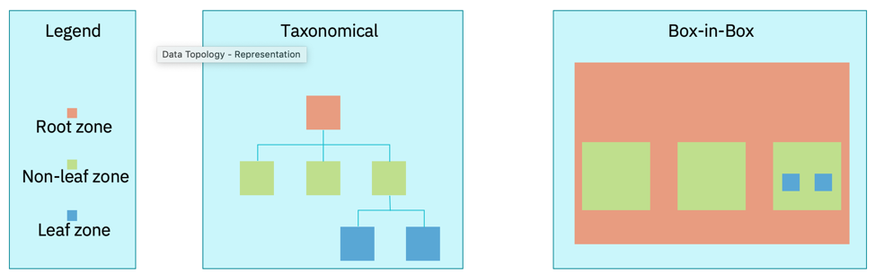

Data Topology
Being able to understand and manage data becomes an essential foundation, for any organization that wants to be successful with analytics and AI,
A data topology is an approach for classifying and managing real-world data scenarios. The data scenarios may cover any aspect of the business from operations, accounting, regulatory and compliance, reporting, to advanced analytics, etc.
A properly designed data topology is sustainable over time, and highly resilient to future needs, new technologies, and the continuous changes associated with data characteristics including volume, variety, velocity, veracity, and perception of the data’s value.
A properly designed data topology will provide the foundation for any enterprise to be successful with any type of analytics.
Core elements of a Data Topology
There are three Core elements of a data topology:
- Zone Map
- Data Flow
- Data Layer
Zones and Zone Maps
Zones represent something which can be used to group/cluster data or with an instantiation/deployment of data.
Zones are inherently abstract and conceptual in nature as a zone is not a deployed object.
A Zone Map identifies and names each zone.
Figure 1 shows the primitive zones that are used in a zone map.

It is only a leaf zone that is associated with the instantiation of data.
Non-primitive zones include a virtual zone that may cluster multiple zones together and reflect groups for data virtualization or data federation.
Data Flow
The data flow shows the flow of Data and helps to illustrate the points of integration or interoperability between the zones.
This can also help to detect circular data flows occurring across zones, to be flagged for investigation as data integrity may potentially be compromised if not well managed (designed and governed).
Data Layer
The data layer is reflective of where data may be persisted. In a modern enterprise we should consider the full landscape of possibilities which could include:
- Public cloud
- On premise private cloud
- Edge
- Device
We can think of this as being a cloud, fog, edge node topology, where the different nodes have different characteristics with compute power, storage capacity, and may be constrained by network connectivity, here data will likely be highly distributed across an organization and certainly across an enterprise.
For example, mixed deployment data layers include:
- Cloud - Public cloud, unconstrained
- Fog - Private cloud, constrained by available infrastructure
- Edge - Smart device, the most constrained by the limitations of compute capabilities, network bandwidth and availability
Characteristics to Consider When Designing a Data Topology
Designing a data topology is an iterative process
- Group users (or end-points) into communities of interest to determine shared needs
- Classify and cluster data into zones with shared qualitative characteristics (use, purpose, need) unconstrained by particular technologies or quantitative characteristics
- Map and align communities of interest to data zones
- Add constraints to further develop the zone map and align with functional and non-functional requirements and capabilities
- Work backwards in the data pipeline to identify areas of synergy and re-use
- Define the flow of data (movement, dependencies) across and within zones in support of the defined constraints
Keeping an organic data topology
A data topology is intended to be organic in nature. Although a static topology is a choice, an organic data topology promotes the development of disciplines for addressing an enterprise with changing needs and priorities over time
- Zones can be regarded as being ephemeral or temporal
- New zones can be added as required
- A new zone can be added as a diagrammatic placeholder without instantiation
- Old zones can be removed or deprecated
- Covers zones that have been expired, sunsetted, retired, archived
-
Leaf zones are intended to have independent aging policies, For example:
-
data can be removed after a given period of time (such as removing data from a raw zone after 7 business days)
- A zone may be designated as being immutable in that data cannot be updated or removed; but that data can be added
Leaf zone guides
A leaf zone is the zone that reflects the instantiation of data.
In that regard, the leaf zone is the least abstract or conceptual of all zone types.
For simplicity purposes, general recommendations to consider when establishing a leaf zone are to:
- limit the database technology to a single type.
- the location (virtual or physical) should be singular.
A conceptual non-leaf zone can be added, that is a grouping of multi-leaf zones together in order to address multiple technologies or multiple locations.
Simplifying security with leaf zones
A leaf zone can also be used to help simplify certain complex security profiles.
There can be situations where a shared data resource requires numerous security policies to address each user group type. For example, some users may have read/write access while other users may only have access to data with obfuscated values.
In the case of an obfuscated value, a user gets access to a certain metatag or field, but the value they receive is actually a substituted value that hides the real value.
As a means to help address complex security needs on a shared data resource, a copy of the data store can be placed in a separate leaf zone. The copy is a form of controlled redundancy.
By having two or more independent leaf zones with the same information, simplified security profiles can be deployed to each leaf zone with the intent to help mitigate the potential for a security breach.
Enterprises and Organizations
When designing the data topology, it is useful to consider the characteristics and differences between organizations within an enterprise and the enterprise.
An organization is often inwardly looking – even when taking into account customers; while an enterprise is outward looking recognizing the place of the organization in a complete ecosystem.
When viewing the enterprise as an ecosystem, it is easier to understand the place and purpose of data. Readily being able to delineate between what data is created and consumed by an organization and what data is created and consumed by the enterprise.
Within an organization, all data is often assumed to be governable through some type of data governance program.
Whereas, within the auspices of the enterprise (the ecosystem), not all data can automatically be assumed to be governable by a data governance program.
This draws into question the horizontal bar that many organizations will create in a system diagram that is labeled as governance and includes third-party data.
For example, if the system includes data ingestion from a company providing social media data, you can’t complain on data quality from a particular tweet if they spelt your company name wrong. You have to have a data quality assessment process in place correcting spelling mistakes or simply remove those data points.